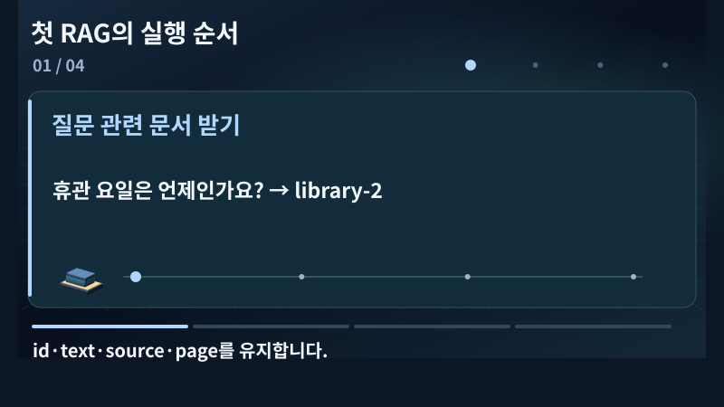
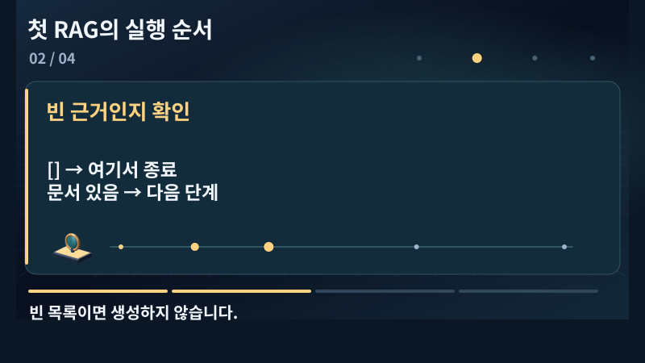
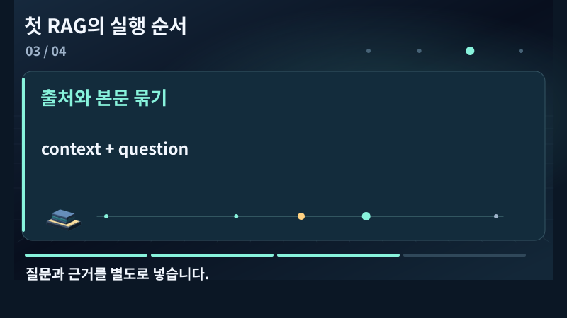
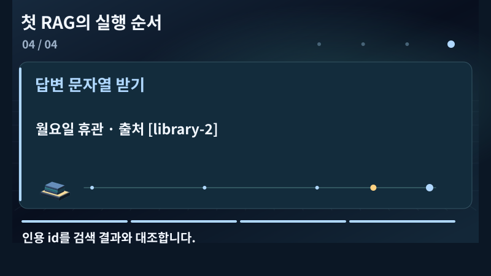

검색·프롬프트·모델을 연결해 첫 RAG 완성하기
검색한 문서는 휴관일을 설명하는데 답변은 엉뚱한 쪽을 인용할 수 있습니다. 검색 결과를 프롬프트에 넣고, 모델이 쓴 출처가 그 결과 안에 실제로 있는지 확인하는 첫 RAG를 완성합니다.
수업 노트북
실행을 확인한 커널은 Python 3.12.15입니다. 예제에 사용한 외부 패키지는 langchain-core 1.6.12입니다.
검색 결과가 프롬프트로 바뀌는 순간
‘검색한 문단’와 ‘사용자 질문’가 오른쪽의 ‘프롬프트’에 함께 들어가는 위치를 보세요.
검색된 문단과 질문을 한 프롬프트에 넣습니다.
23장의 검색 함수를 호출한 뒤에는 이미 고른 문서를 그대로 사용합니다. 질문과 근거는 각각 question과 context에 넣습니다. 아래 제공 함수는 잘못된 쪽 번호, 출처 누락, 중복 ID를 거부합니다.
질문 하나로 문맥 만들기
question = "휴관 요일은 언제인가요?"
hits = retrieve(question, k=1)
context = format_context(hits)셀 01의 마지막 세 줄입니다. hits에는 문서 한 건이, context에는 그 문서의 ID·출처·2쪽 본문이 들어갑니다. 셀 02가 같은 문맥을 답변에 사용합니다.
셀 01 · 한 질문에 넘길 근거 조립하기
셀 맨 아래의 question 한 줄에서 질문을 고릅니다. 먼저 휴관 질문을 실행해 첫 줄의 문서 ID와 둘째 줄의 원문을 읽으세요.
제공 코드 전체 보기
documents = [
{"id":"library-1","text":"도서 대출 기간은 14일입니다.","source":"가상 도서관 이용 안내","page":1},
{"id":"library-2","text":"도서관은 월요일에 휴관합니다.","source":"가상 도서관 이용 안내","page":2},
{"id":"library-3","text":"무인 반납함은 24시간 이용할 수 있습니다.","source":"가상 도서관 이용 안내","page":3}
]
import re
class DataContractError(ValueError):
"""저장된 근거 또는 검색 결과의 형태가 잘못되었습니다."""
def validate_request(question, k=2):
if not isinstance(question, str) or not question.strip():
raise ValueError("질문은 비어 있지 않은 문자열이어야 합니다.")
if isinstance(k, bool) or not isinstance(k, int) or k < 1:
raise ValueError("k는 양의 정수여야 합니다.")
return question.strip()
def validate_documents(documents):
if not isinstance(documents, list):
raise DataContractError("검색 결과는 문서 목록이어야 합니다.")
rows, seen = [], set()
for item in documents:
if not isinstance(item, dict):
raise DataContractError("출처 객체가 필요합니다. 문자열 상태는 먼저 변환하세요.")
if any(not isinstance(item.get(key), str) or not item[key].strip()
for key in ("id", "text", "source")):
raise DataContractError("id·본문·출처가 필요합니다.")
page = item.get("page")
if isinstance(page, bool) or not isinstance(page, int) or page < 1:
raise DataContractError("페이지는 1 이상의 정수여야 합니다.")
if item["id"] in seen:
raise DataContractError("문서 ID가 중복되었습니다.")
# 인용 문법 [id]와 충돌하는 ID는 입력 단계에서 막습니다.
if not re.fullmatch(r"[A-Za-z0-9_.:-]+", item["id"]):
raise DataContractError("문서 ID는 영문·숫자·_ . : -만 사용합니다.")
seen.add(item["id"])
rows.append({key: item[key] for key in ("id", "text", "source", "page")})
return rows
def format_context(documents):
return "\n\n".join(f"[{d['id']}] {d['source']} / p.{d['page']}\n{d['text']}"
for d in validate_documents(documents))
terms = ("대출", "휴관", "반납")
def teaching_vector(text):
return [float(term in text) for term in terms]
def retrieve(question, k=2, page=None):
question = validate_request(question, k)
query = teaching_vector(question)
if not any(query):
return []
pool = [d for d in documents if page is None or d["page"] == page]
def rank(doc):
stored = teaching_vector(doc["text"])
return (sum((a - b) ** 2 for a, b in zip(query, stored)), doc["id"])
return sorted(pool, key=rank)[:k]
question = "휴관 요일은 언제인가요?"
hits = retrieve(question, k=1)
context = format_context(hits)
print(context)실행 결과
[library-2] 가상 도서관 이용 안내 / p.2 도서관은 월요일에 휴관합니다.
첫 줄에는 [library-2]와 자료 이름, p.2가 나옵니다. 둘째 줄은 월요일 휴관을 밝힌 원문입니다. 이 둘을 같은 문자열로 모델에 전달합니다.
셀 02 · 실제 LCEL 경로로 고정 모델 부르기
셀 01에서 만든 질문과 검색 결과를 그대로 씁니다. 첫 문서의 본문과 ID로 이번 대본을 만든 뒤 LCEL에 전달합니다. 검색 결과가 비면 모델을 부르기 전에 멈춥니다.
from importlib.util import find_spec
if not hits:
print("제공된 자료에서 확인할 수 없습니다.")
elif find_spec("langchain_core") is not None:
from langchain_core.prompts import ChatPromptTemplate
from langchain_core.language_models.fake_chat_models import FakeListChatModel
from langchain_core.output_parsers import StrOutputParser
prompt = ChatPromptTemplate.from_messages([
("system", "다음 근거만 읽고 사용한 ID를 표시하세요.\n{context}"), ("human", "{question}")])
doc = hits[0]
reply = f"{doc['text']} [{doc['id']}]"
fixed = FakeListChatModel(responses=[reply])
chain = prompt | fixed | StrOutputParser()
print(chain.invoke({"question": question, "context": context}))
else:
print("langchain-core가 설치된 수업 커널에서 실제 LCEL 연결을 실행하세요.")실행 결과
도서관은 월요일에 휴관합니다. [library-2]
휴관 질문에는 월요일과 [library-2]가 나옵니다. 셀 01의 질문을 ‘대출 기간은?’으로 바꾸고 두 셀을 다시 실행하면 14일과 [library-1]이 나옵니다. ‘주차 요금은?’에는 근거가 없다는 안내가 나옵니다. 이 모델은 준비된 답 한 줄을 돌려줍니다.
인용 검사를 통과하는 조건 읽기
‘답변 인용’가 가운데 ‘검색 ID 대조’에 도착한 뒤 오른쪽에 어떤 결과가 남는지 보세요.
답에 붙인 출처가 실제 검색 목록에 있는지 봅니다.
제공된 answer_question은 검색과 생성을 함수로 받습니다. 예제에서는 두 함수가 한 질문의 자료와 대본만 돌려주므로 근거의 유무와 인용 검사를 따로 재현할 수 있습니다.
셀 03 · 검색하지 않은 ID 인용하기
여기부터는 휴관 질문과 2쪽 문서를 고정합니다. 문장은 그대로 두고 답의 인용만 1쪽으로 바꿔 검사 결과를 보세요.
def answer_question(question, search, generate, k=2):
"""generate(question, context) 문자열을 인용 ID 수준에서 검사합니다.
유효한 인용 ID라도 문장 전체의 사실성이 보장되지는 않습니다.
"""
question = validate_request(question, k)
docs = validate_documents(search(question, k))
if not docs:
return {"status": "no_evidence", "answer": "제공된 자료에서 확인할 수 없습니다.",
"sources": [], "generation_calls": 0}
answer = generate(question, format_context(docs))
if not isinstance(answer, str) or not answer.strip():
raise DataContractError("생성 결과가 비어 있습니다. 거절·미완료 여부를 확인하세요.")
cited = set(re.findall(r"\[([^\[\]]+)\]", answer))
allowed = {d["id"] for d in docs}
if not cited or not cited.issubset(allowed):
return {"status": "invalid_citation", "answer": "출처 표시를 확인해야 합니다.",
"sources": [], "generation_calls": 1}
return {"status": "answered", "answer": answer,
"sources": [d for d in docs if d["id"] in cited], "generation_calls": 1}
def search_closed(question, k):
return [documents[1]]
def wrong_id(question, context):
return "도서관은 월요일에 휴관합니다. [library-1]"
citation_question = "휴관 요일은 언제인가요?"
bad = answer_question(citation_question, search_closed, wrong_id, k=1)
print(bad["status"])실행 결과
invalid_citation
invalid_citation이 나옵니다. 문장은 맞아도 library-1은 검색 결과에 없었습니다. 반대로 올바른 ID를 붙였어도 문장에 다른 요일을 쓰면 이 검사만으로는 발견하지 못합니다.
과제 04 · 맞는 인용을 반환한 결과 확인하기
위의 검색 함수는 그대로 두고 올바른 문장과 ID를 반환하는 생성 함수를 전달하세요. sources에 든 문서의 쪽을 출력하세요.
# 새 생성 함수를 만들고 answer_question을 호출하세요.풀이와 실행 결과 보기
def cite_closed(question, context):
return "도서관은 월요일에 휴관합니다. [library-2]"
answer = answer_question(citation_question, search_closed, cite_closed, k=1)
print(answer["status"], answer["sources"][0]["page"])실행 결과
answered 2
answered와 2가 나옵니다. 사용자에게 전달할 sources에는 실제 인용한 문서 객체만 들어 있습니다.
근거가 없으면 생성을 생략하기
‘빈 검색 결과’가 가운데 ‘근거 확인’에 도착한 뒤 오른쪽에 어떤 결과가 남는지 보세요.
근거가 비었을 때는 모델 호출 횟수도 0입니다.
주차 요금 정보가 없는 질문에 답을 써 달라고 부르면 그럴듯한 요금이 만들어질 수 있습니다. 빈 검색 결과는 생성기 앞에서 정상적으로 처리하고, 통신 실패는 오류로 남깁니다.
과제 05 · 생성 호출이 없었는지 확인하기
항상 빈 목록을 돌려주는 검색 함수를 건네고 상태와 generation_calls를 출력하세요.
# 빈 결과를 돌려주는 검색 함수를 작성하세요.풀이와 실행 결과 보기
def no_hits(question, k):
return []
unanswered = answer_question("주차 요금은 얼마인가요?", no_hits, wrong_id)
print(unanswered["status"], unanswered["generation_calls"])실행 결과
no_evidence 0
no_evidence 0입니다. 생성기 자리에 잘못된 ID를 쓰는 함수가 있었어도 이번에는 호출하지 않았습니다. 시간 초과로 검색에 실패한 경우라면 ‘자료에 없음’과 구분해 알려야 합니다.
다시 풀어 보기
본문 ‘월요일’을 ‘화요일’로만 바꾼 고정 답변을 넣으면 ID 검사가 무엇을 놓칠까요? 원문과 답 문장을 사람이 대조해야 하는 이유를 이 한 건으로 설명할 수 있습니다.
관련 개념 더 읽기
23장의 검색 결과와 LCEL 입력 확인
전반 대조 0.5H 중 15분에 23장의 대출 질문 문서와 빈 주차 결과를 읽어 보세요. question·context 두 입력이 19장의 프롬프트 변수와 맞는지 설명합니다. 검색 오류를 빈 목록과 구분하지 못했다면 23장 contract/limits를 먼저 복습합니다.
검색과 생성의 경계
RAG는 검색한 근거를 질문과 함께 모델 입력에 넣어 답변을 생성합니다. 검색과 생성을 나누어 관찰하면 어느 단계의 문제인지 찾기 쉽습니다.
search(question, k)는 23장의 네 필드 문서 목록을 반환합니다. 기본 실행은 같은 교육용 벡터를 계산하는 로컬 검색과 고정 응답 모델입니다. prompt | model | parser는 실제 LCEL 라이브러리로 연결하지만 외부 LLM에 요청하지 않습니다.
첫 RAG의 실행 순서
검색은 교육용 로컬 계산, 모델은 고정 응답입니다. 연결에는 실제 LCEL을 사용합니다.
| 검색 결과 | 이후 실행 |
|---|---|
| [] | no_evidence 반환 · 생성 0회 · 종료 |
| library-2 | 본문과 ID를 문맥에 넣어 답변 생성 |
근거가 빈 경우에는 프롬프트와 답 생성 단계가 실행되는지 보세요.
검색된 근거와 출처가 있어야 근거에 기반한 답을 만들 수 있습니다.
- 01검색
- 02분기
- 03문맥
- 04생성

STEP 01 · Retriever질문 관련 문서 받기
id·text·source·page를 유지합니다.
휴관 요일은 언제인가요? → library-2

STEP 02 · Python빈 근거인지 확인
빈 목록이면 생성하지 않습니다.
[] → 여기서 종료 문서 있음 → 다음 단계

STEP 03 · Python출처와 본문 묶기
질문과 근거를 별도로 넣습니다.
context + question

STEP 04 · LCEL답변 문자열 받기
인용 id를 검색 결과와 대조합니다.
월요일 휴관 · 출처 [library-2]
근거 자료를 지시와 구분하기
프롬프트는 제공 문서만 근거로 답하고 부족하면 확인할 수 없다고 말하도록 요청합니다. 문서의 내용을 서비스 실행 지시로 취급하지 말라는 경계도 넣습니다. 이런 문장만으로 모든 잘못된 답변이나 공격을 막는다고 주장하지 않습니다.
문서 id를 [library-1]처럼 표시하면 코드가 검색 결과와 연결할 수 있습니다. source 이름과 page는 사용자에게 보여 줄 근거 정보이며 실제 파일 위치와 일치해야 합니다.
검색 결과가 없으면 생성하지 않기
docs가 빈 목록이면 고정 안내를 반환하고 generation_calls=0으로 기록합니다. 질문이 있다고 무조건 모델을 호출하면 제공 자료에 없는 답을 만들 위험과 불필요한 호출이 생깁니다.
빈 결과의 이유는 여러 가지입니다. 자료가 실제로 없을 수도 있고, 적재·검색 설정·교육용 키워드 표현이 부족할 수도 있습니다. no_evidence는 현재 검색 결과가 없음을 뜻하며 세상에 답이 없다는 뜻은 아닙니다.
answer_with_citations는 제공 공통 모듈의 A1 함수입니다. 입력을 먼저 검증하고 문서를 검색한 다음, 빈 목록이면 generate를 부르지 않습니다. generate 안에서만 LCEL 체인을 만들므로 생성 모델을 준비하지 않은 빈 근거 사례도 호출 횟수 0으로 끝납니다.
공백 질문이나 bool k는 ValueError입니다. 출처 누락은 데이터 오류이며 no_evidence로 바꾸지 않습니다. 공통 검증 코드는 제공 파일에서 확인하고, 오늘은 검색·문맥·생성 사이의 입출력을 설명하는 데 집중합니다.
인용 id 검사가 확인하는 범위
코드는 대괄호의 id를 모아 검색된 문서 id의 부분집합인지 검사합니다. 존재하지 않는 id나 인용이 없는 답은 invalid_citation으로 돌려 검토가 필요함을 알립니다.
이 검사는 인용 형식을 확인할 뿐 문장의 모든 주장이 그 문서에서 나온다는 의미 검증은 아닙니다. “대출 기간은 100일 [library-1]”은 id가 맞아 형식 검사를 통과할 수 있지만 원문과 다릅니다. 사람이 원문을 읽거나 별도의 평가가 필요합니다.
| 항목 | 대출 질문 예 |
|---|---|
| documents | library-1과 library-2 두 문서 객체 |
| answer | 대출 기간은 14일입니다. [library-1] |
| sources | library-1 문서 객체 한 개 |
| 반환 필드 | status / answer / sources / generation_calls |
| 검사 | 찾을 수 있는 문제 |
|---|---|
| 빈 근거 검사 | 검색 결과 없이 생성하려는 흐름 |
| id 허용 목록 | 검색하지 않은 출처 번호 |
| 원문 대조 | 맞는 id에 잘못 연결된 주장 |
| 질문 세트 평가 | 반복적으로 나타나는 실패 유형 |
sources는 문자열 ID 목록이 아니라 실제 인용된 id·text·source·page 객체 목록입니다. 검색한 두 번째 문서를 답변에서 사용하지 않았다면 sources에 넣지 않습니다. 팀 자료의 team-01:p-01 같은 콜론 ID도 그대로 인용할 수 있습니다.
[library-1]과 [unknown]을 함께 쓴 답변은 일부만 맞더라도 invalid_citation입니다. 인용을 하나도 쓰지 않은 답변도 같은 상태입니다. invalid_citation은 검토 안내와 빈 sources를 반환하며, 잘못된 답변을 성공 답변으로 내보내지 않습니다.
연결 검사부터 실제 경로까지
rag.py는 공개 Q1의 개발 3개·확인 2개 질문을 실행해 rag/answer-cases.json에 저장합니다. fixed_model은 알려진 질문에 준비된 문장을 돌려주는 대본입니다. 확인 질문도 이미 공개되어 있으므로 새 질문에 대한 일반 성능이나 숨겨진 시험 점수라고 표현하지 않습니다.
run_case는 검색을 한 번만 실행하고 그 문서 목록을 답변 함수에 넘깁니다. search_status는 retrieved/empty/error이고 result에는 A1 결과 또는 None이 들어갑니다. TimeoutError·ConnectionError를 검색 중 받으면 error_type을 남기고 result=None으로 둡니다. 생성 단계의 예외는 검색 오류로 잘못 분류하지 않고 호출자에게 전달합니다.
공백 입력·출처 누락 같은 잘못된 데이터도 예외로 멈춥니다. 이 딕셔너리는 실험 기록입니다. 30~32장에서 같은 필드를 상태에 넣어 쓰지만, 지금 Graph 문법을 배울 필요는 없습니다.
같은 기준 질문으로 실패 분류하기
data/questions.json의 question_id·question·expected_document_ids·answerable을 유지합니다. development는 수정할 때 보는 공개 개발 질문 3개, holdout은 수정 후 다시 확인할 공개 질문 2개입니다. 이번 수업 자료는 이미 모두 공개되어 있어 독립된 성능 측정용 비공개 자료가 아닙니다.
expected_document_ids는 원문 ID입니다. 검색 문서는 청크 ID이므로 data/source-map.json의 document_id로 원문에 연결합니다. 현재 한 페이지가 한 청크여서 ID가 같지만, 나중에 청크를 더 나누면 같다고 가정할 수 없습니다. 검색 후보와 실제 인용 출처, 사람이 본 사실 일치를 각각 기록하세요.
| 구분·ID | 질문 주제 | 기대 원문 |
|---|---|---|
| development · dev-01 | 대출 기간 | library-1 |
| development · dev-02 | 휴관 요일 | library-2 |
| development · dev-03 | 주차 요금 | 없음 |
| holdout · holdout-01 | 반납함 시간 | library-3 |
| holdout · holdout-02 | 카페 메뉴 | 없음 |
출처와 다음 학습
본문과 예제의 확인 범위는 VALIDATION.md에 기록합니다. Windows/WSL 실기와 실제 수강생의 소요 시간은 현장에서 확인합니다.